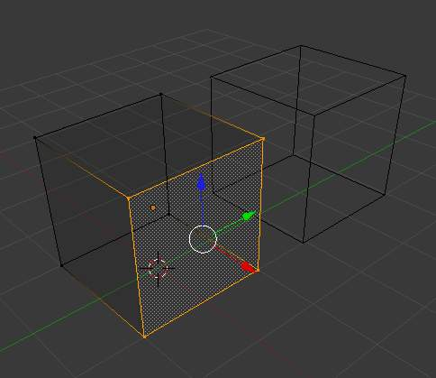
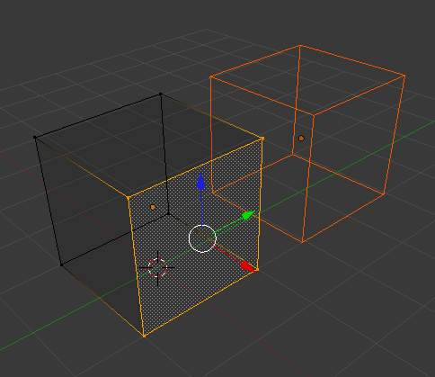

简介¶
编辑模式¶
你可以在两种模式下操作几何物体.
- 物体模式
- 在物体模式下操作将会影响整个物体. 物体模式 在3D视图下的标题栏如下:
物体模式标题栏.
- 编辑模式
- 操作 in 编辑模式 affect only the geometry of an object, but not global properties such as location or rotation. 编辑模式 has the following header in the 3D视图:
编辑模式标题栏.
Tools and modes in the 3D视图 header are (left to right):
- View, Select, and Mesh menus
- Blender Mode
- Display method for 3D视图
- Pivot center
- 3D manipulator widget
- Selection mode
- Depth buffer clipping (hide)
- Proportional editing
- Snap
- OpenGL render
You can switch between the Object and 编辑模式s with Tab.
You can change to any mode by selecting the desired Mode in the menu in the 3D视图 header.
Visualization¶

One cube selected. |

Two cubes selected before entering 编辑模式. |
{kind=link}
{kind=link}
By default, Blender highlights selected geometry in orange in both 物体模式 and 编辑模式.
In 物体模式 with Wireframe shading enabled Z,
objects are displayed in black when unselected and in orange when selected.
If more than one object is selected, all selected object except the active object,
typically the object last selected, is displayed in a darker orange color. Similarly,
in 编辑模式, unselected geometry is drawn in black while selected faces, edges,
or vertices are drawn in orange. The active face is highlighted in white.
In 编辑模式, only one mesh can be edited at the time. However, several objects can be joined into a single mesh
(Ctrl-J in 物体模式) and then separated again (P in 编辑模式).
If multiple objects are selected before entering 编辑模式,
all the selected objects remain highlighted in orange indicating that they are part of the active selection set.
If two vertices joined by an edge are selected in Vertex selection mode, the edge between them is highlighted too. Similarly, if enough vertices or edges are selected to define a face, that face is also highlighted.
Tool Shelf¶
The Tool Shelf panel in edit mode (panel split in two parts for layout reasons).
Open/close the Mesh Tools panel using T.
When entering 编辑模式, several mesh tools become available.
Most of these tools are also available as shortcuts
(displayed in the Tooltips for each tool) and/or in the Specials menu
W, the Edge menu Ctrl-E ,and Face menu
Ctrl-F.
For each tool a context-sensitive menu is opened at the bottom of the Tool Shelf.
Even more mesh editing tools can be enabled in the 用户首选项 ‘ 插件 section.
For further information see Panels.
Properties Shelf¶
The Properties Shelf panel in edit mode (panel split in two parts for layout reasons).
Open/close the Properties Shelf using N.
In the Properties Shelf, panels directly related to mesh editing are the 变换 panel, where numeric values can be entered, and the Mesh Display panel, where for example normals and numeric values for distances, angles, and areas can be turned on.
其他 useful tools are found in the Properties Editor under the Object and Object Data tabs, including display options and Vertex groups.
Mesh Display¶
Mesh Display Panel.
This panel is available only in edit mode, when the object being edited is a mesh.
The Overlays section provides controls for highlighting parts of the mesh.
- Edges
- Toggles the option to see the selected edges highlighted. If enabled the edges that have both vertices selected will be highlighted This only affects in vertex selection mode and when UV Unwrapping.
- Faces
- Defines if the selected faces will be highlighted in the 3D视图. This affects all selection modes.
- Creases and Bevel Weight
- Highlights edges marked with a crease weight for the 细分 Surface Modifier and/or a bevel weight for the Bevel Modifier, respectively. In both cases, the higher the weight, the brighter the highlight.
- Seams and Sharp
- Highlights edges marked as an UV seam for unwrapping and/or sharp edges for the Edge Split Modifier
Normals Section:
We can choose to show or not the normals of faces and/or vertices using the Face and Vertex tick boxes, under the Normals section. In addition, we can define the size of these with Normal Size.
The Numerics section allows users to see some numerical measures of the selected elements on screen:
- Edge Length
- shows the lenghts, in Blender units, of the selected edges.
- Face Angles and Face Area
- show the angles (in degrees) and area (in square Blender units) of the selected faces.